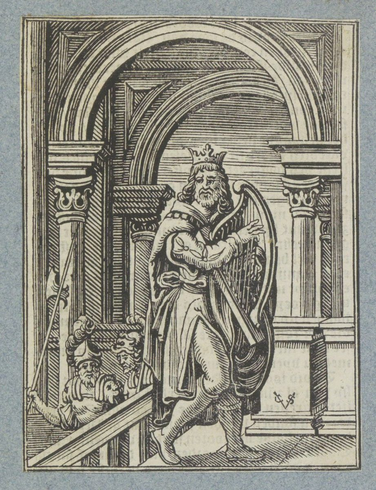

2 Samuel 22 — La Traducción Mister

2 Samuel 22:1. El título es el del museo, y su catálogo dice que David toca su arpa y canta un canto de gracias por haber sido librado de sus enemigos. El versículo dice que David «habló» las palabras del cántico, vayedabber, y no dice nada de un arpa ni de una sala; los dos soldados tras la baranda son de los grabadores. Ninguna de las imágenes propias del cántico, la peña, las aguas, el trueno, está en el grabado.

Notas del traductor — versículo por versículo
El día del cántico. «Y David habló a Jehová las palabras de este cántico en el día en que Jehová lo libró de la palma de todos sus enemigos, y de la palma de Saúl»: el sustantivo es kaf, «palma», dos veces, y el Salmo 18, donde está el mismo cántico, tiene el segundo como yad, «mano»: miyyad Sha’ul. La RV 1909 dice «de la mano de todos sus enemigos, y de la mano de Saúl». La NVI dice «David dedicó al Señor la letra de esta canción». La TNM 1987 dice «de la palma de la mano de todos sus enemigos». El encabezado del Salmo es otro del todo, «Al músico principal. Salmo de David siervo de Jehová», y el Salmo 18:2 tiene una línea que este cántico no tiene, «Te amo, Jehová, fortaleza mía». El cántico viene después de las guerras del capítulo anterior, y el versículo no dice a qué día se refiere.
Peña y baluarte. «Jehová es mi peña, y mi baluarte, y mi libertador para mí»: los tres nombres son sal’i, metsudati y mefalleti li (véanse sela y metsudah). La RV 1909 dice «Jehová es mi roca, y mi fortaleza, y mi libertador». La NVI dice «El Señor es mi roca, mi amparo, mi libertador». La TNM 1987 dice «Jehová es mi peñasco y mi plaza fuerte». El griego de Rahlfs tiene petra mou kai ochyrōma mou. Son los nombres de los lugares donde David se escondió de Saúl: «descendió a la peña» (1 Samuel 23:25) y «se quedó en el desierto, en los baluartes» (23:14, ambos ya en estas páginas).
Seis títulos. «Mi Dios es mi roca; en él me refugio; mi escudo, y el cuerno de mi salvación, mi torre alta, y mi refugio, mi salvador — de la violencia me salvas»: la roca aquí es tsur (véase tsur), el escudo es magen, y el cuerno es el qeren que Ana alzó (1 Samuel 2:1, ya en estas páginas; véase qeren). La RV 1909 dice «Mi escudo, y el cuerno de mi salud, mi fortaleza, y mi refugio». La NVI dice «¡mi más alto escondite!». La TNM 1987 dice «mi altura segura». La última cláusula, «mi salvador — de la violencia me salvas», está en este cántico y no en el Salmo 18:3, que termina en «mi torre alta» (véase chamas).
El digno de alabanza. «Invoco a Jehová, el digno de alabanza; y de mis enemigos soy salvado»: la palabra es meholal, «alabado», puesta antes del nombre. La RV 1909 dice «digno de ser loado». La NVI dice «que es digno de alabanza». La TNM 1987 dice «A Aquel que ha de ser alabado, a Jehová, invocaré». Los verbos son imperfectos que las versiones ponen en presente, en pasado o en futuro, y las notas que siguen guardan el tiempo de cada versículo como el hebreo lo permite. «Enemigos» está en el versículo 1 y otra vez aquí, y es la palabra de los últimos versículos del cántico.
Torrentes de la nada. «Porque me rodearon las olas de la muerte; los torrentes de la nada me aterraron»: nachalei beliyaal (véase beliyaal), la palabra del «hombre de la nada» de Simei (2 Samuel 16:7) y de Seba, «un hombre de la nada» (2 Samuel 20:1, ambos ya en estas páginas). La RV 1909 dice «arroyos de iniquidad me asombraron». La NVI dice «los torrentes destructores me abrumaron». La TNM 1987 dice «avenidas impetuosas de [hombres] que no servían para nada». El griego de Rahlfs tiene cheimarroi anomias, «torrentes de iniquidad». El hebreo no dice si lo que se compara con una inundación son hombres o el nombre de un poder.
Cuerdas y lazos. «Las cuerdas del Seol me rodearon; los lazos de la muerte me salieron al encuentro»: chevlei She’ol (véase sheol) y mokeshei mavet. La RV 1909 dice «Me rodearon los dolores del infierno». La NVI dice «Los lazos del sepulcro me enredaron». La TNM 1987 dice «los lazos de la muerte se presentaron delante de mí». El griego de Rahlfs tiene ōdines thanatou, «dolores de la muerte». El verbo «salieron al encuentro» es qiddemuni, y el mismo verbo se dice de los enemigos en el versículo 19: «me salieron al encuentro en el día de mi calamidad».
Desde su templo. «En mi angustia invoqué a Jehová, y a mi Dios clamé; y él oyó mi voz desde su templo, y mi clamor llegó a sus oídos»: hekhal, palacio o templo, es la palabra de la casa de Siló en Samuel; aquí es el lugar desde el cual oye, y el cántico no le da dirección terrenal. La RV 1909 dice «Y él oyó mi voz desde su templo». La NVI dice «él me escuchó desde su Templo». La TNM 1987 dice «Entonces desde su templo oyó mi voz». El Salmo 18:7 añade «delante de él» al clamor, «mi clamor delante de él llegó a sus oídos»; este cántico no tiene esas palabras.
Aguas. El primer peligro del cántico es el agua: olas y torrentes aquí, «una reunión de aguas» en la nube del versículo 12, «los cauces del mar» en el versículo 16, y «muchas aguas» de las que es sacado en el versículo 17. Los enemigos del versículo 1 no vuelven a aparecer hasta el versículo 4 y luego en el 18, y entre uno y otro el poema habla el lenguaje del mar, del Seol y del fuego.
La tierra se sacudió. «Y la tierra se sacudió y tembló; los cimientos de los cielos se estremecieron; y se sacudieron, porque él se airó»: el hebreo dice «cimientos de los cielos», moserot hashamayim, donde el Salmo 18:8 tiene «cimientos de los montes», moserei harim. La RV 1909 dice «Los fundamentos de los cielos fueron movidos». La NVI dice «se sacudieron los cimientos de los cielos». La TNM 1987 dice «los fundamentos mismos de los cielos se agitaron». El griego de Rahlfs tiene ta themelia tou ouranou. El verbo de la primera cláusula está escrito vattitga’ash y leído vayyitga’ash. El cántico de Débora tiene el mismo temblor cuando Jehová sale de Seir: «la tierra tembló, los cielos destilaron» (Jueces 5:4–5, ya en estas páginas). El versículo 9 tiene af, «nariz», la palabra que significa también ira: humo de las narices, fuego de la boca, carbones ardiendo.
Un querubín, y las alas del viento. «Y montó sobre un querubín, y voló; y fue visto sobre las alas del viento»: el último verbo es vayyera, «fue visto», donde el Salmo 18:11 tiene vayyede, con una dálet por la resh, que las versiones toman como «se lanzó» o «se remontó». La RV 1909 dice «Aparecióse sobre las alas del viento». La NVI dice «se remontó sobre las alas del viento». La TNM 1987 dice «fue visible sobre las alas de un espíritu». La palabra ruach es viento y espíritu (véase ruach), y la TNM elige lo segundo. La nube es una cubierta: la RV 1909 dice «á modo de pabellones», la NVI «hizo tiendas que lo rodeaban», la TNM 1987 «como cabañas», en hebreo sukkot; «una reunión de aguas» es chashrat mayim, cuya primera palabra es incierta.
Trueno, flechas, confusión. «Jehová tronó desde los cielos, y el Altísimo dio su voz… Y envió flechas, y los dispersó; el relámpago, y los confundió»: los verbos son yar’em, «truena», y vayyehom, «confundió», y están juntos en la derrota de los filisteos en el sacrificio de Samuel: «Jehová tronó con gran voz aquel día contra los filisteos, y los confundió» (1 Samuel 7:10), y en el «contra ellos truena en los cielos» de Ana (1 Samuel 2:10, ambos ya en estas páginas). «Y los confundió», vayhummem, está en cuatro versículos: Josué 10:10, 1 Samuel 7:10, este, y el Salmo 18:15; en este versículo es la forma escrita, y la lectura es vayyahom. La RV 1909 dice «Jehová tronó desde los cielos» y «Relampagueó, y consumiólos». La NVI dice «se oyó el trueno del Señor» y «con relámpagos los desconcertó». La TNM 1987 dice «Jehová empezó a tronar» y «para ponerlos en confusión». El Salmo 18:13–14 añade «granizo y carbones de fuego» al trueno, y este cántico no.
Los cauces del mar. «Y se vieron los cauces del mar; los cimientos del mundo quedaron al descubierto, a la reprensión de Jehová, al soplo del aliento de sus narices»: afiqei yam, y tevel, el mundo (véase tevel). La RV 1909 dice «aparecieron los manantiales de la mar». La NVI dice «las cuencas del mar quedaron a la vista». La TNM 1987 dice «los cauces del mar se hicieron visibles». El aliento de sus narices es el aliento al que «se amontonaron las aguas» en el cántico del mar (Éxodo 15:8, ya en estas páginas). En el Salmo 18:15 es «a tu reprensión, Jehová, al soplo del aliento de tus narices»: el Salmo le habla a él, y este cántico habla de él.
Me sacó. «Envió desde lo alto, me tomó; me sacó de muchas aguas»: el verbo es yamsheni, de mashah (véase mashah), el verbo del nombre de Moisés: «Porque de las aguas lo saqué» (Éxodo 2:10, ya en estas páginas). La RV 1909 dice «sacóme de copiosas aguas». La NVI dice «me sacó del mar profundo». La TNM 1987 dice «sacándome de grandes aguas». Los verbos del versículo, «envió», «tomó», «sacó», son los verbos de un rescate, y el estante los pone en presente, en pasado o en futuro, porque el hebreo tiene el imperfecto.
Mi apoyo. «Me salieron al encuentro en el día de mi calamidad, pero Jehová fue mi apoyo»: mish’an, un bastón en que apoyarse. La RV 1909 dice «Mas Jehová fué mi sostén». La NVI dice «mi apoyo fue el Señor». La TNM 1987 dice «Jehová se hizo mi apoyo». «Me libró de mi enemigo fuerte, de los que me aborrecían, porque eran más fuertes que yo»: el enemigo es uno y fuerte, «los que me aborrecían» son muchos, y ninguno tiene nombre.
Se deleitó en mí. «Y me sacó a un lugar amplio; me libró, porque se deleitó en mí»: el verbo es chafets (véase chafets), el verbo del «el rey se agrada de ti» de los siervos de Saúl (1 Samuel 18:22) y del «el que se complace en Joab» del joven (2 Samuel 20:11), y del propio «no me complazco en ti» que David temía que Jehová dijera (2 Samuel 15:26, todos ya en estas páginas). La RV 1909 dice «porque puso su voluntad en mí». La NVI dice «se agradó de mí». La TNM 1987 dice «porque se había deleitado en mí». El lugar amplio es merchav, de la raíz de «la plaza de Bet-seán» (2 Samuel 21:12).
Justicia y manos limpias. «Jehová me recompensó conforme a mi justicia; conforme a la limpieza de mis manos me pagó… Y fui íntegro para con él, y me guardé de mi iniquidad»: la RV 1909 dice «Remuneróme Jehová conforme á mi justicia». La NVI dice «El Señor me ha pagado conforme a mi justicia». La TNM 1987 dice «Jehová me recompensa conforme a mi justicia». En el versículo 24 la RV 1909 dice «guardéme de mi iniquidad», la NVI «me he abstenido de pecar» y la TNM 1987 «me guardaré de error de parte mía». Las palabras son las de tsidqah y tamim; el cántico no menciona a Betsabé ni a Urías, y David había dicho «He pecado contra Jehová» y se le había dicho «Jehová también ha quitado tu pecado» (2 Samuel 12:13, ya en estas páginas). La página registra los dos textos y no los concilia. El Salmo 18:21–25 tiene las mismas palabras.
Leal, íntegro, limpio. «Con el leal te muestras leal; con el héroe íntegro te muestras íntegro; con el limpio te muestras limpio; y con el torcido te muestras retorcido»: chasid (véase chasid), gibbor tamim, navar e ikkesh. El Salmo 18:26 tiene gever tamim, «un hombre íntegro», donde este cántico tiene gibbor, «héroe» (véase gibbor). La RV 1909 dice «con el íntegro te muestras íntegro». La NVI dice «íntegro con quien es íntegro». La TNM 1987 dice «con el poderoso, exento de falta». Para la última cláusula la RV 1909 dice «con el perverso eres rígido», la NVI «sagaz con el que es tramposo» y la TNM 1987 «con el torcido tú actuarás como simple»; el verbo hebreo de aquí no es el del Salmo.
Los afligidos y los altivos. «Y al pueblo afligido lo salvas, y tus ojos están sobre los altivos; los humillas»: el Salmo tiene «a los ojos altivos humillas», einayim ramot, y aquí los ojos son de Jehová. La RV 1909 dice «tú salvas al pueblo humilde». La NVI dice «Das la victoria a los humildes». La palabra «íntegro», tamim, está en cuatro versículos de este poema: 24, 26, 31 y 33.
Mi lámpara. «Porque tú eres mi lámpara, Jehová; y Jehová ilumina mi oscuridad»: el hebreo es attah niri, «tú eres mi lámpara», donde el Salmo 18:28 tiene «tú enciendes mi lámpara». La RV 1909 dice «Porque tú eres mi lámpara, oh Jehová». La TNM 1987 dice «Pues tú eres mi lámpara, oh Jehová». El griego de Rahlfs tiene lychnos. Los hombres de David juraron en el capítulo anterior que no «apagaría la lámpara de Israel» (2 Samuel 21:17, ya en estas páginas), y la palabra de aquí se escribe distinto (véase ner).
Una tropa, un muro, una palabra refinada. «Porque por ti corro contra una tropa; por mi Dios salto un muro»: la RV 1909 dice «con mi Dios saltaré las murallas», la NVI «podré asaltar murallas» y la TNM 1987 «por mi Dios puedo trepar un muro». «Dios — su camino es íntegro; la palabra de Jehová es refinada; escudo es para todos los que se refugian en él»: la RV 1909 dice «La palabra de Jehová purificada», la NVI «la palabra del Señor es intachable» y la TNM 1987 «el dicho de Jehová es refinado». El verbo es tserufah, fundida. El escudo y el refugio del versículo 3 vuelven en el 31.
Fuera de Jehová. «Porque ¿quién es Dios fuera de Jehová? ¿Y quién es una roca fuera de nuestro Dios?»: el hebreo tiene El y mibbal’adei, donde el Salmo 18:32 tiene Eloah y zulati. La RV 1909 dice «¿qué Dios hay sino Jehová?». La NVI dice «¿Quién es la Roca sino nuestro Dios?». La TNM 1987 dice «¿quién es un Dios fuera de Jehová». Es el «no hay santo como Jehová, porque no hay ninguno fuera de ti; y no hay roca como nuestro Dios» de Ana (1 Samuel 2:2, ya en estas páginas).
Un fuerte baluarte, o el que me arma. «Dios es mi fuerte baluarte, y hace íntegro mi camino»: este cántico tiene ma’uzzi chayil, «mi baluarte, fuerza», donde el Salmo 18:33 tiene hame’azreni chayil, «el que me ciñe de fuerza». La RV 1909 dice «Dios es el que con virtud me corrobora». La NVI dice «Es él quien me arma de valor». La TNM 1987 dice «El Dios [verdadero] es mi fortísima fortaleza». El griego de Rahlfs tiene ho ischyros ho krataiōn me dynamei, «el fuerte que me fortalece con poder». El verbo de la segunda cláusula es incierto, y la palabra «mi camino» está escrita darko, «su camino», y leída darki, «mi camino».
Ciervas, alturas, un arco. «Hace mis pies como los de las ciervas, y me pone de pie sobre mis alturas; adiestra mis manos para la guerra, y mis brazos doblan un arco de bronce»: la palabra «mis pies» está escrita raglav, «sus pies», y leída ragli, «mis pies». La RV 1909 dice «El que hace mis pies como de ciervas». La NVI dice «da a mis pies la ligereza del venado». La TNM 1987 dice «haciendo mis pies como los de las ciervas». Para el arco la RV 1909 dice «quiebre el arco de acero», la NVI «un arco de bronce» y la TNM 1987 «han doblado un arco de cobre». El cántico del Arco fue la lamentación que David enseñó a Judá (2 Samuel 1:18, ya en estas páginas).
Tu mansedumbre. «Me has dado el escudo de tu salvación, y tu mansedumbre me hace grande; ensanchas mis pasos debajo de mí, y mis tobillos no han resbalado»: la palabra es anotekha, y el estante no se pone de acuerdo sobre ella. La RV 1909 dice «tu benignidad me ha acrecentado». La NVI dice «tu ayuda me ha hecho prosperar». La TNM 1987 dice «tu humildad es lo que me hace grande». El griego de Rahlfs tiene hypakoē sou, «tu obediencia». El Salmo 18:35 añade «tu diestra me sustentó», que este cántico no tiene. La forma tachteni, «debajo de mí», está en tres versículos, todos de este poema: 37, 40 y 48.
Perseguidos y acabados. «Perseguí a mis enemigos y los destruí; y no volví atrás hasta acabarlos»: el verbo de la segunda cláusula es ashmidem, «los destruí», donde el Salmo 18:38 tiene ashigem, «los alcancé». La RV 1909 dice «Perseguiré á mis enemigos, y quebrantarélos». La NVI dice «Perseguí a mis enemigos y los destruí». La TNM 1987 dice «Ciertamente seguiré tras de mis enemigos, para aniquilarlos». Las palabras son las de lo acabado: kalotam, «hasta acabarlos», y en el versículo 39 va’akhallem, «y los acabé». La oración pone todo en boca de David.
Ningún salvador. «Y a mis enemigos — me diste la espalda; a los que me aborrecían, los destruí. Miraron, pero no hubo salvador; a Jehová, pero no les respondió»: la RV 1909 dice «Tú me diste la cerviz de mis enemigos», la NVI «Hiciste retroceder a mis enemigos» y la TNM 1987 «ciertamente me darás [su] cerviz». En el versículo 42 la RV 1909 dice «Miraron, y no hubo quien los librase», la NVI «Pedían ayuda y no hubo quien los salvara» y la TNM 1987 «Claman por ayuda, pero no hay salvador». El verbo aquí es yish’u, «miraron»; el Salmo 18:42 tiene yeshav’u, «clamaron». «Jehová no le respondió» se dice de Saúl cuando preguntó (1 Samuel 28:6, ya en estas páginas).
Polvo, y las contiendas de mi pueblo. «Y los molí como el polvo de la tierra; como el lodo de las calles los aplasté… Y me libraste de las contiendas de mi pueblo; me guardaste como cabeza de naciones; un pueblo que no había conocido me sirvió»: la RV 1909 dice «Yo los desmenuzaré como polvo de la tierra», la NVI «Parecían el polvo de la tierra» y la TNM 1987 «finos como el polvo de la tierra»; el Salmo 18:42 tiene «polvo delante del viento». En el versículo 44 la RV 1909 dice «Tú me libraste de contiendas de pueblos», la NVI «Me has librado de los conflictos con mi pueblo» y la TNM 1987 «de la actitud criticona de mi pueblo». El hebreo es rivei ammi, «mi pueblo», y el Salmo 18:43 tiene am, «un pueblo». No se nombra ninguna nación, y el versículo no dice a qué disputas de su propio pueblo se refiere.
Los hijos del extranjero. «Los hijos del extranjero se encogen ante mí; al oír de mí, me obedecen. Los hijos del extranjero se marchitan, y salen temblando de sus fortalezas»: el verbo es yitkachashu, de la raíz de «mentir» (véase kachash). La RV 1909 dice «Los extraños titubeaban á mí». La NVI dice «Son extranjeros, y me rinden homenaje». La TNM 1987 dice «Extranjeros mismos vendrán a mí encogidos de temor». La última cláusula tiene la RV 1909 «temblaban en sus escondrijos», la NVI «temblando salen de sus refugios» y la TNM 1987 «saldrán temblando de sus baluartes».
Vive Jehová. «Vive Jehová, y bendita sea mi roca; y exaltado sea Dios, la roca de mi salvación»: chai Yehovah, la fórmula de juramento usada como grito. La RV 1909 dice «Viva Jehová, y sea bendita mi roca». La NVI dice «¡El Señor vive! ¡Alabada sea mi Roca!». La TNM 1987 dice «Jehová vive; y bendita sea mi Roca». Este cántico tiene Elohei tsur yish’i, «el Dios de la roca de mi salvación», y el Salmo 18:46 tiene Elohei yish’i, «el Dios de mi salvación».
Venganzas, y el hombre de violencias. «El Dios que me da venganzas, y hace bajar a los pueblos debajo de mí, y que me saca de entre mis enemigos; tú me levantas por encima de los que se alzan contra mí; del hombre de violencias me libras»: el sustantivo es nekamot, «venganzas», y «violencias» es chamasim en plural, donde el Salmo 18:49 tiene el singular (véase chamas). La RV 1909 dice «El Dios que me ha vengado» y «Librásteme del varón de iniquidades». La NVI dice «Él es el Dios que me vindica» y «me salvas de los hombres violentos». La TNM 1987 dice «el Dador de actos de venganza a favor de mí» y «del hombre de hechos violentos me librarás». «De la violencia me salvas» cerró el versículo 3; el cántico no nombra a ningún hombre.
Entre las naciones. «Por eso te doy gracias, Jehová, entre las naciones, y a tu nombre canto»: la RV 1909 dice «yo te confesaré entre las gentes, oh Jehová». La NVI dice «canto salmos a tu nombre». La TNM 1987 dice «te daré gracias, oh Jehová, entre las naciones». Pablo cita la línea para decir que las naciones glorifiquen a Dios: «Por eso te reconoceré entre las naciones, y cantaré a tu nombre» (Romanos 15:9, ya en estas páginas).
Una torre de salvación. «Torre de salvación es para su rey, y hace bondad a su ungido, a David y a su descendencia, para siempre»: la primera palabra está escrita magdil, «engrandece», y leída migdol, «torre de», y esta traducción sigue la lectura. La RV 1909 dice «El que engrandece las saludes de su rey». La NVI dice «Él da grandes victorias a su rey». La TNM 1987 dice «Aquel que está haciendo grandes actos de salvación para su rey». El griego de Rahlfs tiene megalynōn, «engrandeciendo», y el Salmo 18:51 tiene la forma escrita. «Su rey» y «su ungido» son las palabras finales del cántico de Ana (1 Samuel 2:10), y «a David y a su descendencia para siempre» es la promesa de la palabra de Natán (2 Samuel 7:12, 16, ambos ya en estas páginas; véase chesed).
Patrones que vale la pena llevar adelante
Donde esta traducción mantiene las palabras exactas y distintas: «la palma de todos sus enemigos»; «mi peña» y «mi roca»; «mi baluarte»; «el cuerno de mi salvación»; «mi torre alta»; «el digno de alabanza»; «las olas de la muerte»; «torrentes de la nada»; «las cuerdas del Seol»; «salieron al encuentro»; «desde su templo»; «los cimientos de los cielos»; «un querubín»; «las alas del viento»; «los confundió»; «los cauces del mar»; «me sacó»; «mi apoyo»; «un lugar amplio»; «se deleitó en mí»; «mi justicia» y «la limpieza de mis manos»; «íntegro»; «leal»; «los afligidos» y «los altivos»; «mi lámpara»; «refinada»; «fuera de Jehová»; «mi fuerte baluarte»; «mis alturas»; «tu mansedumbre»; «acabados»; «las contiendas de mi pueblo»; «los hijos del extranjero»; «venganzas»; «el hombre de violencias»; «una torre de salvación»; y «su ungido»; con las formas escritas en las notas.
Ecos pagados. El cántico de Ana, su cuerno, su trueno, su «no hay ninguno fuera de ti», y su «su rey … su ungido» (1 Samuel 2:1, 2, 10); el trueno y la confusión en el sacrificio de Samuel (1 Samuel 7:10); la tierra que tiembla de Débora (Jueces 5:4–5); el aliento de las narices de Jehová en el mar (Éxodo 15:8); el sacar de las aguas a Moisés (Éxodo 2:10); la peña y los baluartes del escondite de David (1 Samuel 23:14, 25); la «nada» de Simei y de Seba (2 Samuel 16:7; 20:1); el preguntar sin respuesta de Saúl (1 Samuel 28:6); el deleite del que hablaron los siervos de Saúl, el joven de Joab y el propio David (1 Samuel 18:22; 2 Samuel 20:11; 15:26); el «He pecado» de David y el pecado quitado (2 Samuel 12:13); la lámpara de Israel (2 Samuel 21:17); el cántico del Arco (2 Samuel 1:18); la plaza de Bet-seán (2 Samuel 21:12); la promesa de una descendencia para siempre (2 Samuel 7:12, 16); y la cita de Pablo (Romanos 15:9).
Ecos plantados. El mismo cántico que el Salmo 18, con su encabezado y las líneas que cada texto no tiene (Salmo 18); «trueno» y «confusión» en Gabaón en tiempos de Josué (Josué 10:10); las últimas palabras de David y los nombres de sus valientes (2 Samuel 23:1–39, ya en estas páginas); la lámpara de David (1 Reyes 11:36); y el «dulce cantor de Israel» (2 Samuel 23:1, ya en estas páginas). Ninguno de los demás está todavía en estas páginas.
Siguiente en este libro: 2 Samuel 23 — las últimas palabras de David, el dicho del hombre puesto en alto, el ungido del Dios de Jacob, y los nombres de los valientes que tuvo David.